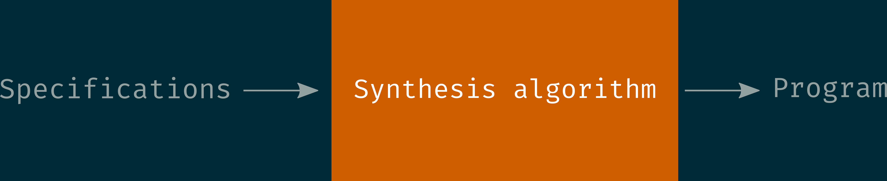
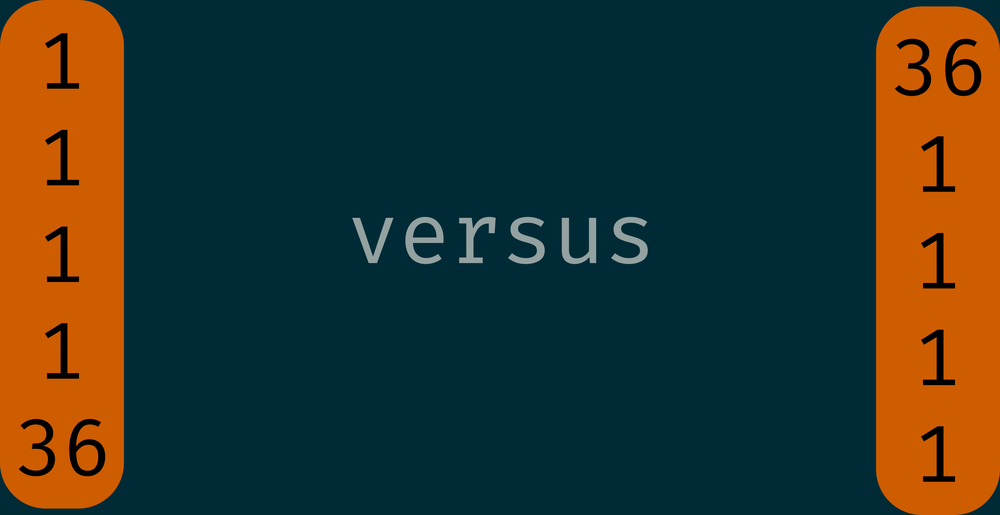
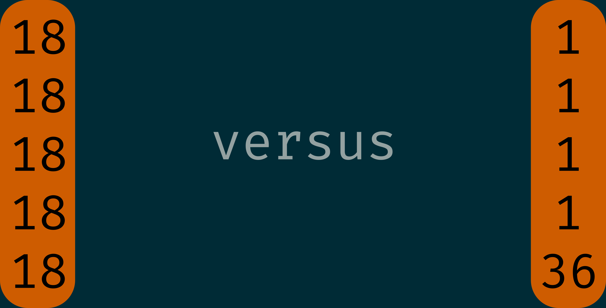

Search algorithms for program synthesis
(Learning and Verification day, Bordeaux)
Guillaume Lagarde (LaBRI)
13/01/2020
Program synthesis

Program space
• models from formal languages (automata, grammars)
• structured programs (Domain-specific Languages)
Specifications
• set of I/O examples (Inductive Program Synthesis)
• pre/post-conditions by logical formulas (Functional synthesis)
Similarities with ML

| Program Synthesis | Machine Learning |
|---|---|
| small number of examples | large amount of data |
| combinatorial search | optimization |
| satisfies all specifications | minimizes a loss function |
| domain-specific language (interpretable) | models hard to understand |
Two challenges
- Search. Discover a piece of code satisfying the specifications.
- Ranking. Find not just some program but the intended program.
FlashFill (Gulwani et al. 2011)
Included in Microsoft Excel!


Correct with one I/O in 60% of the cases!
Can we compute the average of two numbers in 32 bits without using 64 bits? Problem: \(x+y\) is prohibited!
One solution \[(x \& y)+(x \wedge y) \gg 1\] where \(\&\) is bitwise and, \(\wedge\) is bitwise xor, and \(\gg\) is right shift.
Setting
- Programming by few examples (typically 5 I/O)
- Program space:

38 high level instructions operating on lists
The line of attack
Learning Inductive Program Synthesis (LIPS)
• choose an attribute function \[\begin{align*} \mathcal A: \text{programs} &\to \text{attribute vectors}\\ P &\mapsto \mathbf{a_P}\\ \end{align*}\]
• train a model to predict \(q(\mathbf a | \mathcal E)\), the probability that attribute \(\mathbf a\) is realized in the target program, given \(\mathcal E\) some I/O examples
• given some fixed I/O examples, use the trained model as an expert to guide the search in the program space
Challenges
• need to find useful attributes
- predictable from I/O
- reducing the search space
• need to train the model
- data generation
- choice of the model
• need to find efficient ways to enumerate programs using the oracle
In practice
For any instruction \(i\), learn \(q(\mathbf {a^i_P}| \mathcal E) = \Pr (i \text{ appears in the program }P)\)
Search algorithms
• biased DFS
- choose a maximal length T
- choose the first instruction to be the one maximizing \(\Pr (i \text{ appears in }P)\) and recursively fill the rest of the program, before moving on to a next choice for the first instruction.
• Sort-and-add enumeration
Weaknesses
• DFS: some tuples are tested lately despite being pretty likely
- first: position 36
- second: position \(35\times36^4 = 58786560\)
• Sort-and-add: test several time the same tuples + a tuple can be penalized for only one bad instruction
- ratio second/first position \(\sim 100\)
Blind mastermind
- \(n\) colors (= \(n\) instructions)
- a tuple of colors of size \(k\) (= a program of length \(k\))
Setting: an unknown distribution \(D\) on tuples
The game
• a secret tuple \(t\) is sampled from a distribution \(D\)
• the player guesses tuples until \(t\) is found
Goal
The player wants a strategy \(S\) that minimizes
\[\mathbb{E}_{t\sim D}(\text{number of guesses to find }t \text{ with }S )\]
Deterministic strategy
A deterministic strategy is an order on tuples \[\sigma: \text{tuples} \to [n^k] \]
We want to minimize \[\min_{\sigma} \sum_{t} \sigma(t)\cdot D(t)\]
that we can write more concisely using a scalar product \[\min_{\sigma} [\sigma, D]\]
General strategies
A randomized strategy is a distribution \(S\) on orders
This time, we want to minimize \[\min_S \sum_{\sigma \in \mathfrak{S}([n]^k)} S(\sigma) \cdot [\sigma, D]\]
Extremal cases
• No information about \(D\)
- play the uniform strategy
• Full information about \(D\)
- play a deterministic strategy \(\sigma\) such that \(D(\sigma^{-1}(1))> D(\sigma^{-1}(2)) > \dots > D(\sigma^{-1}(n^k))\)
No memory case
Small riddle
You have a biased coin with probabilities \((\frac 2 3,\frac 1 3)\). A master tosses the coin and you want to guess if that's head or tail. Problem: you can't memorize your previous guesses.
Solution
Sample from a biased coin with probabilities \((\frac{\sqrt 2}{1+ \sqrt 2},\frac{1}{1+ \sqrt 2})\)
⠀Theorem⠀
With full knowledge of \(D\), the best memoryless strategy is
\[D'(t) = \frac{\sqrt{D(t)}}{\sum_{t'} \sqrt{D(t')}}\]
- Nice if hard to compute on the fly the order \(\sigma_D\)
- Easy to run tests in parallel
Partial information: "marginals"
Now we know for all color \(c\): \[M_{c} = \frac{\underset{t \sim D}{\mathbb{E}}(\#\{j \text{ s.t } t[j] = c\})}{k}\]
Heuristic
Imagine you play against \(D_M(t) = \prod_j M_{t[j]}\)
Playing against \(D_M\)
Can argue you are in an average-case scenario since \[\inf_S \underset{D \text{ that respects }M}{\mathbb{E}}(\underset{t\sim D}{\mathbb{E}}(\text{number of guesses to find }t \text{ with }S ))\] is equal to \[\inf_S \underset{t\sim D_M}{\mathbb{E}}(\text{number of guesses to find }t \text{ with }S )\]
Good thing
In other words, you fight against one particular distribution, \(D_M\)
Best strategy
Play the order \(\sigma_{D_M}\) given by \(D_M\)
In a worst-case scenario, we would like to optimize \[\inf_S \sup_{D \text{ that respects }M}(\underset{t\sim D}{\mathbb{E}}(\text{number of guesses to find }t \text{ with }S ))\]
but this is another story…
Playing against \(D_M\)
If you play the best strategy, the average time to find a tuple is \[[\sigma_{D_M},D_M]\]
Problem: How to find efficiently the order \(\sigma_{D_M}\)???
Instead: Play the best memoryless strategy \(D'_{M}(t) = \frac{\sqrt{D'_{M}(t)}}{\sum_{t'} \sqrt{D_M(t')}}\)
⠀Theorem⠀
\([\sigma_{D_M},D_M] \leq [D'_M,D_M] \leq k\cdot\ln n \cdot [\sigma_{D_M},D_M]\)